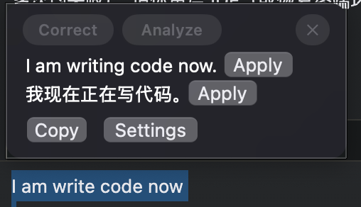
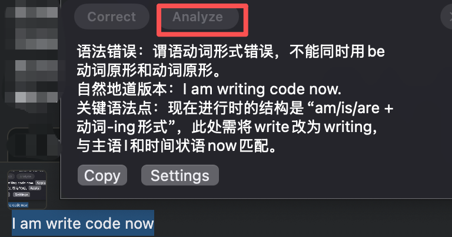

下载与安装
- macOS：双击 dmg 安装包，把 ElfinGrammar 图标拖到 Applications 即完成安装；首次打开请右键点击（或 Control + 单击）应用 → 打开。
- Windows：exe 为绿色便携版，放到任意目录双击运行即可，无需安装；如被 SmartScreen 拦截，请点「更多信息 → 仍要运行」。
- macOS 首次启动请在 系统设置 → 隐私与安全性 → 辅助功能 中勾选 ElfinGrammar（复制纠错不需要该权限）。
使用说明
01
选中文字，自动纠错
在大多数可编辑区域中，选中文字并等待约 1 秒， 会自动弹出纠错后的内容及对应的中文翻译。
受系统限制，选中自动纠错功能仅在部分编辑区域可用。
02
复制内容，自动纠错
在任意位置复制内容（如常用的 Ctrl+C 或右键复制）， 等待约 1 秒后同样会自动弹出语法纠错。
03
弹窗自动消失规则
弹出窗口会在你点击鼠标或 10 秒无操作后自动消失； 当鼠标移入窗口时，它会保持显示，不会消失。


配置模型
建议在 Settings 设置中配置你自己的大模型：任意 OpenAI 兼容模型均可， 例如 Ollama、豆包、DeepSeek。
关于隐私
服务器端仅用于登录，不保存任何客户端对话数据。但你的输入内容会发送给 大模型（LLM）进行处理，请务必注意保护个人隐私。当你使用自己的大模型时， 数据将直接传输给该模型，不会经过服务器端。
免责声明
本软件免费提供，按“现状”提供，不附带任何明示或默示的担保。开发者不保证软件无错误或满足你的特定需求。 在适用法律允许的最大范围内，开发者不对因使用本软件而产生的任何直接或间接损失承担责任，使用风险由你自行承担。